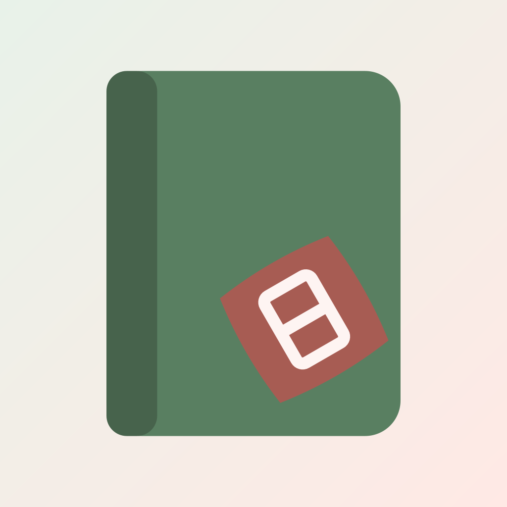

명리일기 시각 정체성 견본 (V0·V1)
기준: visual-identity.md · 근거: specs/2026-10-10-visual-identity-design.md, specs/2026-10-11-design-tokens-design.md · 값의 출처: tools/palette.py · 토큰: tokens/. 이 페이지는 보는 사람의 라이트·다크 설정을 따르고, 비교 패널은 양쪽 모드를 함께 보여줍니다.
원시 팔레트
OKLCH 고정 명도 단계. 화면은 이 값을 직접 쓰지 않고 아래 의미 역할만 씁니다.
의미 역할과 대비
글자 조합은 모두 4.5:1 이상입니다(palette.py --check 52/52).
라이트
| 본문 글자 / 기본 바탕 | 가나다 Aa | 13.22 |
| 보조 글자 / 시트 | 가나다 Aa | 6.82 |
| 주 버튼 | 저장하기 | 6.65 |
| 용어 토큰 | 수 기운 | 5.80 |
| 좋은 날 배지 | 좋은 날 | 4.89 |
다크
| 본문 글자 / 기본 바탕 | 가나다 Aa | 14.85 |
| 보조 글자 / 시트 | 가나다 Aa | 6.15 |
| 주 버튼 | 저장하기 | 10.34 |
| 용어 토큰 | 수 기운 | 7.38 |
| 좋은 날 배지 | 좋은 날 | 8.23 |
오행 팔레트 (데이터 전용)
견본은 실제 옷 색을 가리키므로 모드와 관계없이 같은 값이고, 항상 얇은 테두리를 둡니다. 원국표 한자는 Pretendard JP입니다.
라이트
다크
그라데이션 gradient.today
데일리 카드·온보딩·공유 이미지에만 씁니다. 공유 이미지는 라이트로 고정합니다. 위에는 본문·보조 글자만 올립니다.
날의 성격 배지
좋은 쪽은 coral, 그 밖은 neutral(결정 V8). 강도는 좋은 날(채움) > 귀인의 날(옅은 coral) > 기신의 날(옅은 회색) > 평범한 날(테두리만)입니다.
캘린더 길흉
엔진 LuckLevel을 날짜 칸 채우기로 보여줍니다. 보통은 채우지 않습니다. 점은 일기·일정 표시용으로 남겨 둡니다(V2). 색만으로는 전달되지 않으므로 글·스크린리더로도 전합니다(V2).
라이트
다크
타이포그래피
문장은 둥근 고딕 400 한 굵기, UI·숫자·데이터는 Pretendard. 한국어 UI 자간은 글자 크기의 -2%, 숫자 스타일은 고정폭 숫자(tnum). 예문은 견본용이며 실제 문구는 writing이 정합니다.
| type.sentence.card 17 / 1.65 (ja 1.75) / 400 |
지윤님에게 필요한 수 기운이 들어오는 날이에요.
Jiyun, the water energy you need comes in today.
|
| type.sentence.body 15 / 1.6 (ja 1.7) / 400 |
미뤄 둔 연락을 하기 좋아요. 오늘 있었던 일을 짧게 적어 보세요.
|
| type.display 24 / 1.25 / 600 | 계수(癸水) |
| type.title 20 / 1.3 / 600 | 나의 사주 私の四柱 |
| type.subtitle 16 / 1.4 / 600 | 오행 분포 |
| type.label.lg 14 / 1.3 / 600 | 일기 쓰기 |
| type.label.md 13 / 1.3 / 500 | 행운 색 · 방향 · 숫자 1 · 6 |
| type.caption.md 12 / 1.3 / 500 | 10월 10일 토요일 |
| type.caption.sm 11 / 1.3 / 500 | 정관 · 편인 · 식신 |
| type.numeric.calendar 14 / 1.2 / 500 · tnum | 1 2 3 11 18 21 28 31 |
| type.numeric.table 13 / 1.3 / 500 · tnum | 3 · 13 · 23 · 33 · 2026 · 2036 |
| type.hanja.pillar 17 / 1.0 / 700 | 甲 丙 戊 庚 壬 子 午 卯 酉 |
일본어 줄 간격
한자·가나가 섞여 빽빽한 일본어는 한국어보다 줄 간격을 넓힙니다(결정 V11). 예문은 임시이며 W1 원어민 검수 문장으로 다시 확인합니다.
한국어 · 카드 1.65 / 본문 1.6
오늘은 식신의 기운이 도와요. 서두르기보다 주변을 정리하는 쪽이 마음 편한 날이에요.
오후는 집중하기 좋은 시간이에요. 중요한 연락은 그 전에 끝내 두면 차분하게 보낼 수 있어요.
日本語 · カード 1.75 / 本文 1.7
今日は食神の気が味方します。急ぐよりも、身の回りを整えるほうが心地よい日です。
午後は集中しやすい時間帯です。大事な連絡はその前に済ませておくと、落ち着いて過ごせます。
간격과 반경
간격은 4px 기준(2는 미세 조정용), 이름은 px 값(space.*). 반경은 크기 이름(radius.*). 어느 컴포넌트가 어느 값을 쓰는지는 V2에서 정합니다.
space
radius
데일리 카드 L1
흰 패널 없이 그라데이션 위에 날짜 → 날의 성격 배지 → 문장 → 반투명 칩 한 줄. 행운 값은 예시입니다.
로고
60px 이상은 큰 원형, 48px 이하는 작은 원형. 원본은 풀블리드 정사각이고 아래 둥근 모서리는 플랫폼 마스크를 흉내 낸 것입니다.
라이트

180다크
Android 적응형 아이콘
배경·전경 레이어를 원·둥근 사각·사각 마스크에 넣은 모습입니다.
V2 요소와 상호작용
낙관 도장 세 변형, 태그 칩 길흉 톤, 상태 꼬리표, 경고 표시입니다. 글자는 자리 채우기입니다. 전체 명세는 컴포넌트 명세에 있습니다.
라이트
다크
상호작용 패턴(interaction.md):
press.ink먹 번짐 ·appear.seep/disappear.seep스밈 ·select.seep-slide스밈 이동 15%loading.breathe먹 숨쉬기(스피너 없음) ·seal.stamp/seal.erase도장 찍힘·지워짐 ·mark.underline-grow펼침 밑줄sheet.enter/sheet.exit/sheet.stack시트 ·focus.ring포커스 테두리